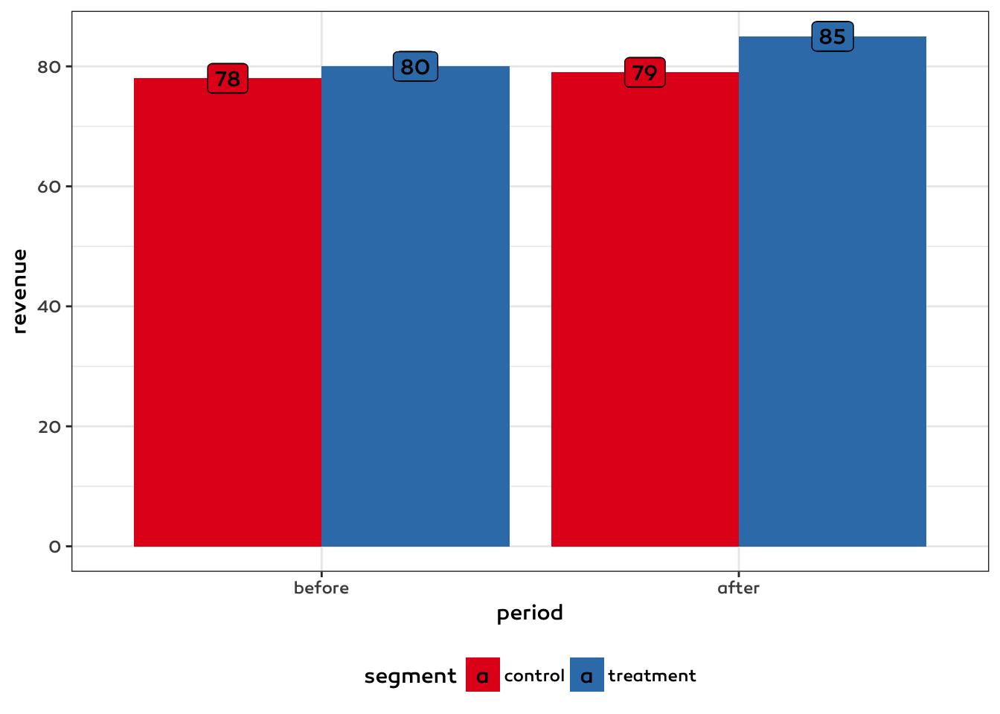
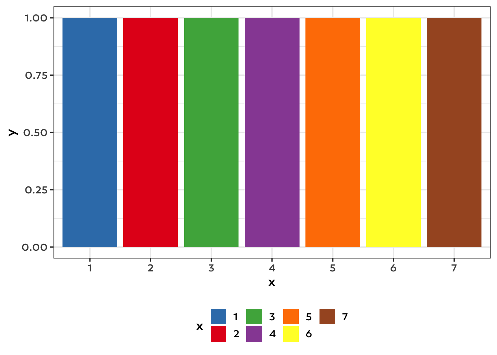
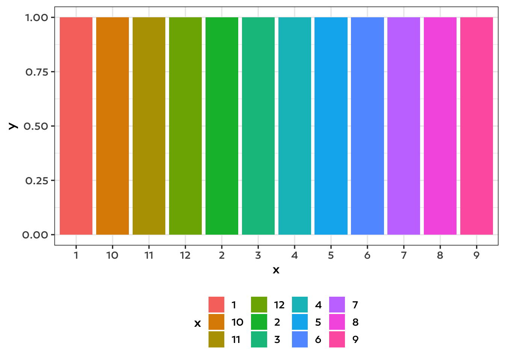
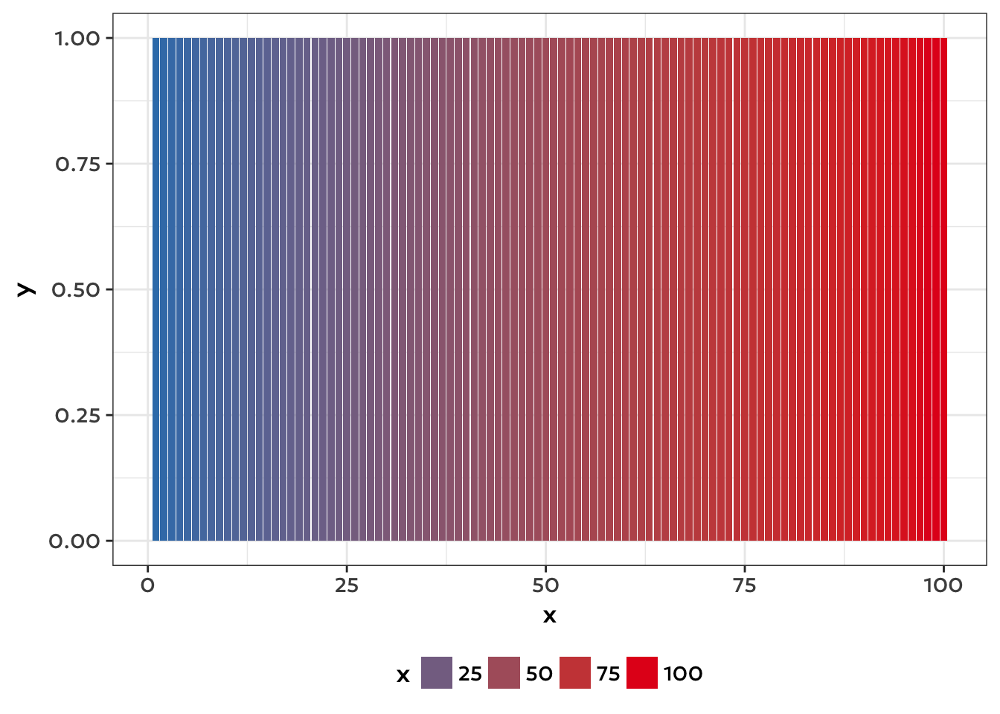
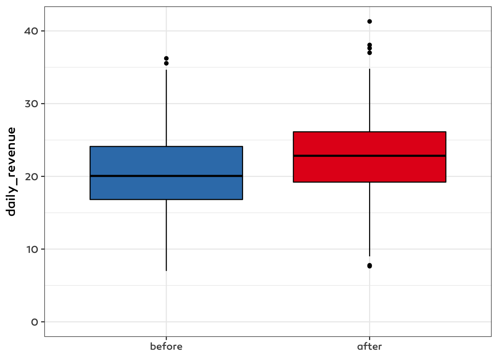
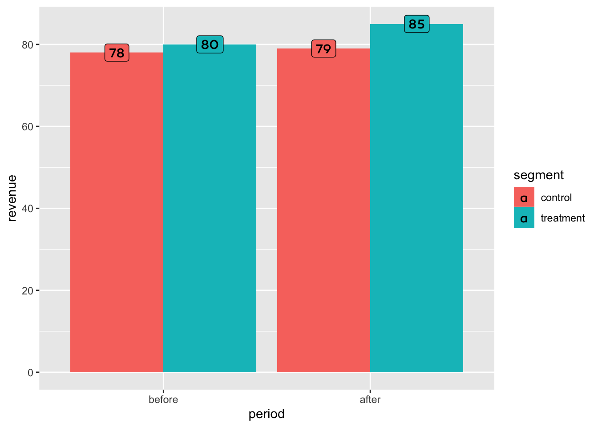

I spoke about custom ggplot2 themes at the last BURN meetup. My slides are available here but I will give you a somewhat extended summary here. A custom theme could come in handy both in academia and industry to ensure a consistent style.
Motivation
As easy as it is to generate meaningful and complex charts with ggplot2 it can be tedious to control every detail of your chart to make it publication-ready. There are several alternative themes out there (e.g. excel style, Simpson style etc.) At Emarsys we wanted to have a theme with Emarsys colors and our own font so just using an existing theme was not enough. We spent quite of a lot of time on setting colors manually for analysis we sent to our clients. However, creating these plots were not only tedious but error-prone and they still lacked full consistency. So we looked for an easy way to modify the default ggplot2 theme.
By theme I actually mean three different components:
- color palette
- font
- theme (in ggplot2 sense, like
theme_bw).
For a simple example data and base plot we will shorten our code from this:
our_ggplot +
scale_fill_manual(values = c("treatment" = "#377EB8",
"control" = "#E41A1C")) +
geom_label(
aes(label = revenue),
position = position_dodge(width = 0.9),
family = "Canaro Medium"
) +
theme_bw(base_family = "Canaro Medium") +
theme(legend.position = "bottom")
to this:
set_our_theme()
our_ggplotSpecifics
For defining a color palette we used the great ggthemr package.
get_theme_palette <- function() {
ggthemr::define_palette(
swatch = c("#000000",
"#377EB8", "#E41A1C", "#4DAF4A", "#984EA3",
"#FF7F00", "#FFFF33", "#A65628", "#F781BF"),
gradient = c(lower = "#377EB8", upper = "#E41A1C")
)
}The swatch is for controlling discrete color scales (next n after first is used if n colors are needed) and the gradient is for continuous color scales. Using this theme if more discrete colors are needed than colors given will result in an error.
You can set a theme with base font size and base font family inside ggplot2, you do not need ggthemr for this.
theme_our <- function(base_size = 13) {
theme_bw(base_size, base_family = "Canaro Medium") +
theme(legend.position = "bottom")
}However, the font family defined in a theme call won’t have effect on texts drawn by geom_text or geom_label so we have to address these separately.
update_font_defaults <- function() {
update_geom_defaults("text", list(family = "Canaro Medium"))
update_geom_defaults("label", list(family = "Canaro Medium"))
}Now the theme setter simply calls these three functions.
set_our_theme <- function(base_size = 13) {
ggthemr::ggthemr(get_theme_palette())
theme_set(theme_our(base_size = base_size))
update_font_defaults()
}Color palette in action
set_our_theme()Discrete scale:
ggplot(data.table(x = as.character(1:7), y = 1), aes(x, y, fill = x)) +
geom_col()
Using this theme if more discrete colors are needed than colors given will result in an error. You may add scale_fill_hue to fall back to default coloring.
ggplot(data.table(x = as.character(1:12), y = 1), aes(x, y, fill = x)) +
geom_col() +
scale_fill_hue()
Continuous scale:
ggplot(data.table(x = 1:100, y = 1), aes(x, y, fill = x)) +
geom_col()
You may wonder what is the first color in the swatch is used for: some geoms like boxplot have a default color which would be probably strange being too colorful, at these places this first color is used (box outline, outliers etc.)

reset the theme
If you want to switch-off or change themes within an R session you can do so easily. However a use-case hasn’t actually come up for us yet.
ggthemr::ggthemr_reset()
our_ggplot
Conclusions
It became so easy to make our plots Emarsys-themed that now we use it by default for exploratory, internal plots as well. What we sometimes miss is an easy way to use a similar theme with plotly as well.